①始めに主にFusion360を使って設計したもの
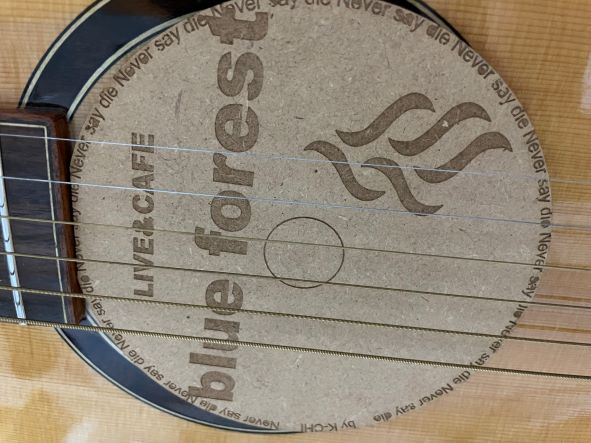
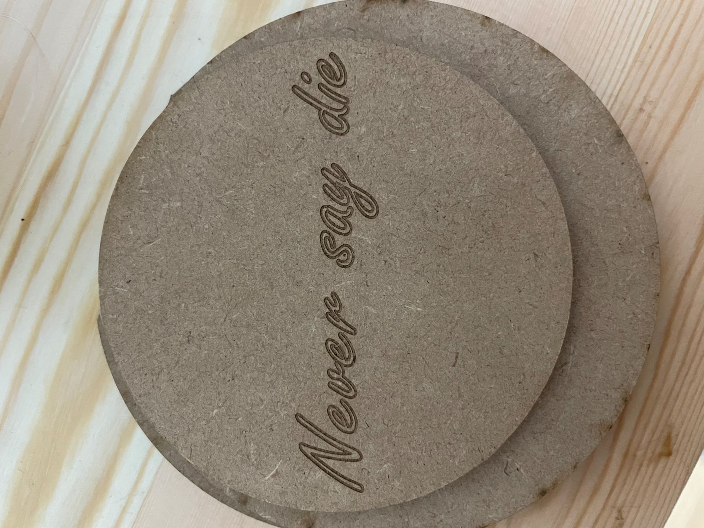
まず、Fusion360で円盤を作り、文字を入れた
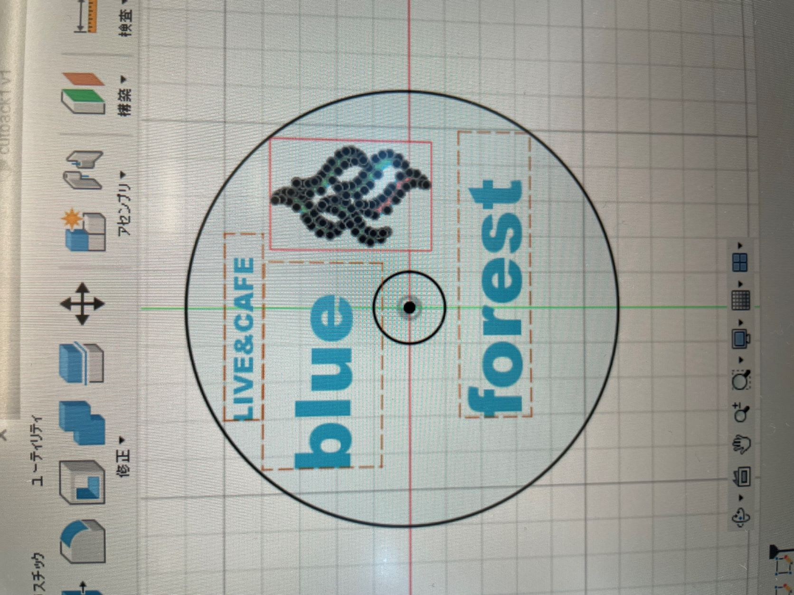
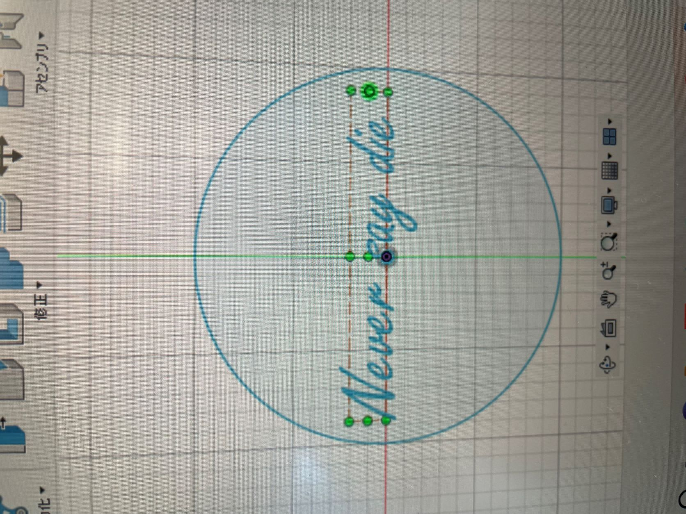
それをDXFファイルにして、illustratorで彫刻する部分、カットする部分を書き込もうとした。が、ここで問題が！
何度選択しても文字の中を塗りつぶすことが出来ない！！
ファブラボのスタッフの方や、先生の力をお借りしました。
その原因はパスと言われる図形を構成する要素がバラバラになっていたこと。
下の画像のように、 Fusionで入力した文字はパスがバラバラになっている。
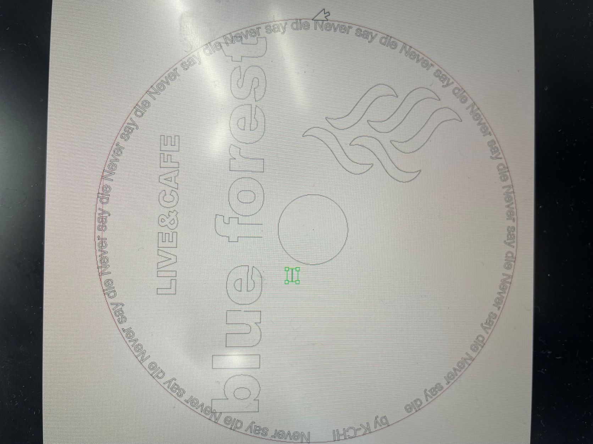
（Fの下の部分が移動してしまっている）
illustratorで文字の中を塗りつぶすには文字のパスが繋がっている必要がある。
通常、パスを繋げるには
画面上部の[オブジェクト]メニューの[パス]サブメニューの[連結]の項目をクリック
または、[Ctrl]+[J] キーを押す
パスの結合 - パスの連結 (Illustratorの操作方法・使い方)
しかしこの操作をすると下の画像のように不要な部分も連結されてしまい、上手く行かなかった。
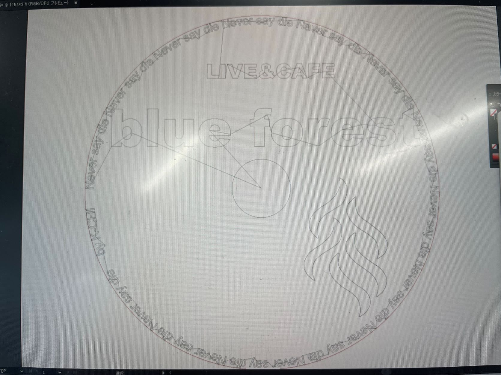
そこで次の方法を試した。
画面上部の[オブジェクト]メニューの[パス]サブメニューの[パスのアウトライン] をクリック
次に、同じく画面上部の[ウィンドウ]メニューから[パスファインダー]をクリック
そしてパスファインダーのパネルから[合流]をクリック
すると、なんということでしょう。綺麗にパスを繋げることができました。
これで、文字の中を塗りつぶして彫刻することができます！
②主にillustratorを使って作り直したもの
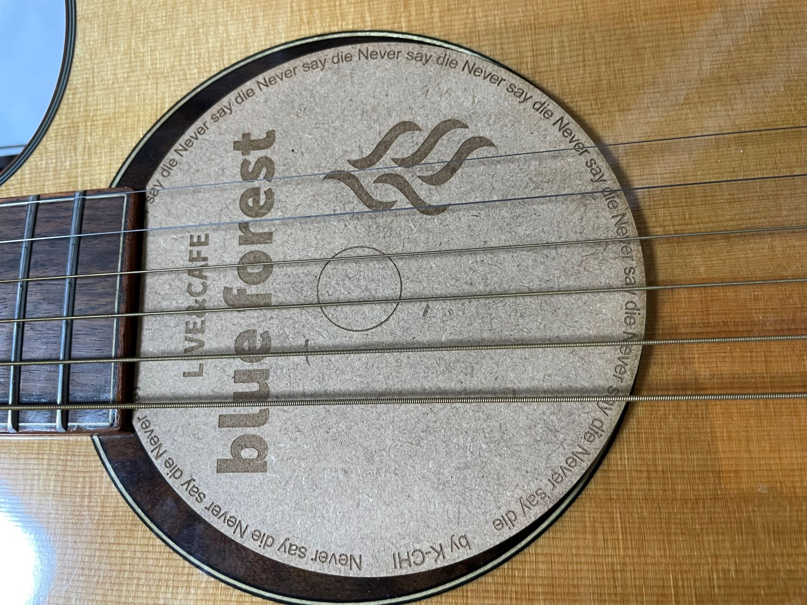
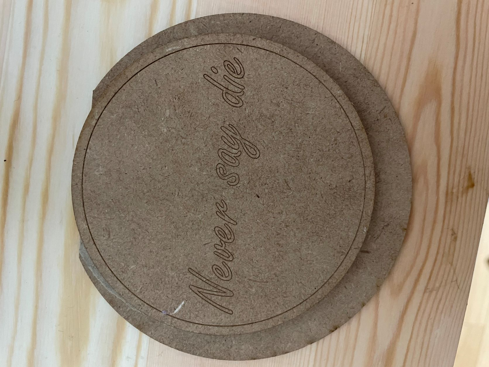
①では上部の切り込みが浅く、装着したときに少し不格好だと感じたので作り直した。
Fusionで文字を入力するのは二度手間だと学んだ私は、illustratorの操作を身に着ける意味合いも含めて主にillustratorで文字を入力した。
illustratorで入力した文字はパスの連結をする必要がなく、塗りつぶされている。
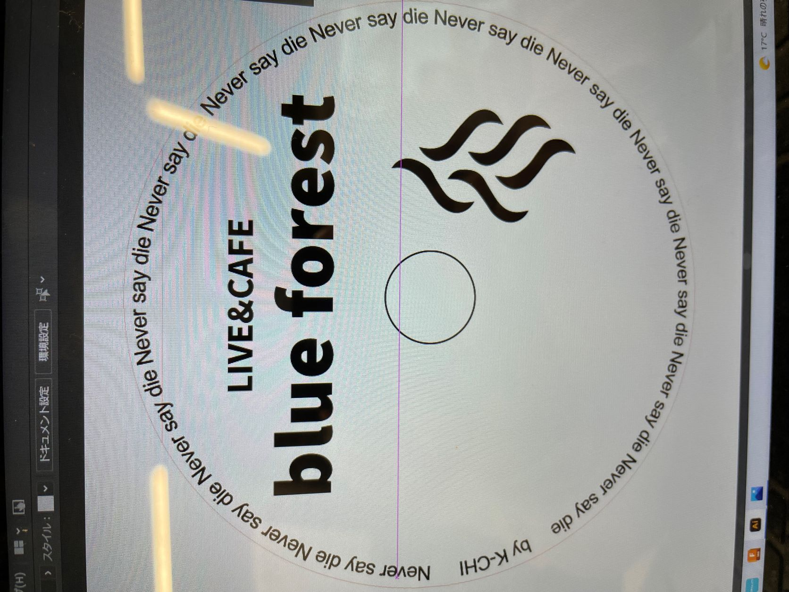
illustratorで円を作成するには、
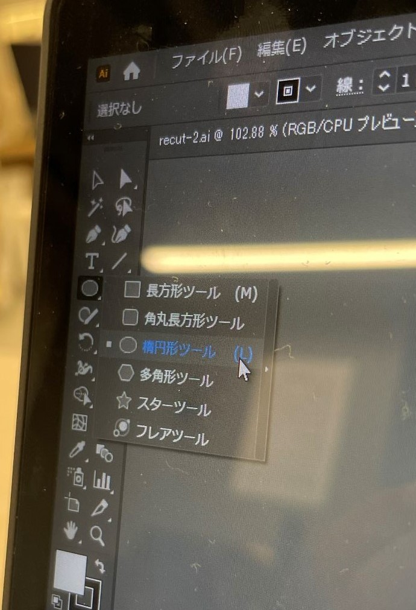
上の画像のイラストを長押しし、楕円形ツールをクリック、もしくはLキーを押す
アートボード上をクリックしてドラック
高さや幅の指定は下の画像上部、シェイプの右側で変更が可能
楕円形ツールを使用した基本シェイプの描画
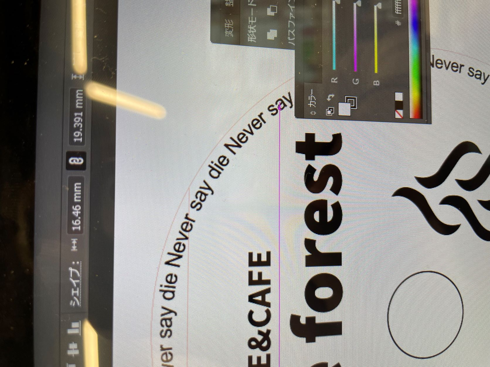
円を囲うように文字を入力する方法についてはこちらを参照↓
テキストを丸く配置–パス上文字ツールを使う
また、こちらのマークを彫刻するには、画像を挿入し、トレースという方法を用いた。
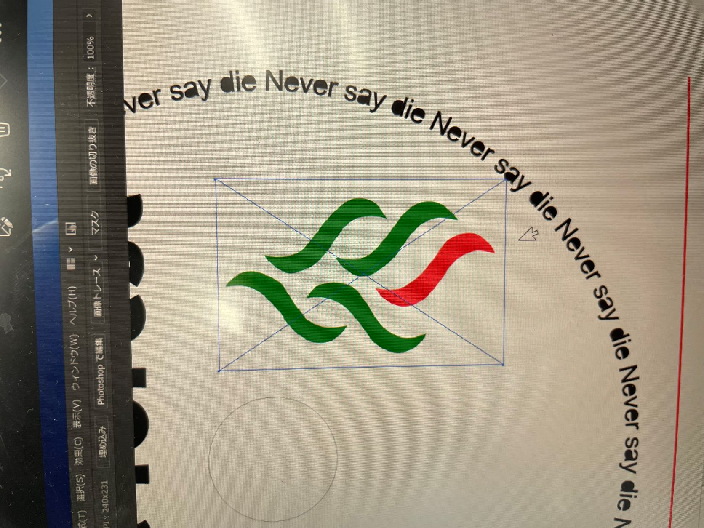
[ファイル]メニューから[配置]もしくは、[Shift]+[Ctrl]+[P]キーを押す
挿入したい画像を選択し、配置する
画面上部の[画像トレース]をクリック
拡張をクリック
トレースしたモノを選択し、右クリック、[グループ解除]をクリック